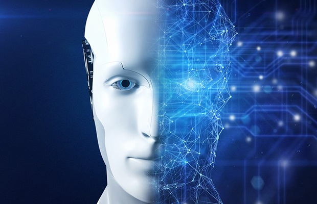
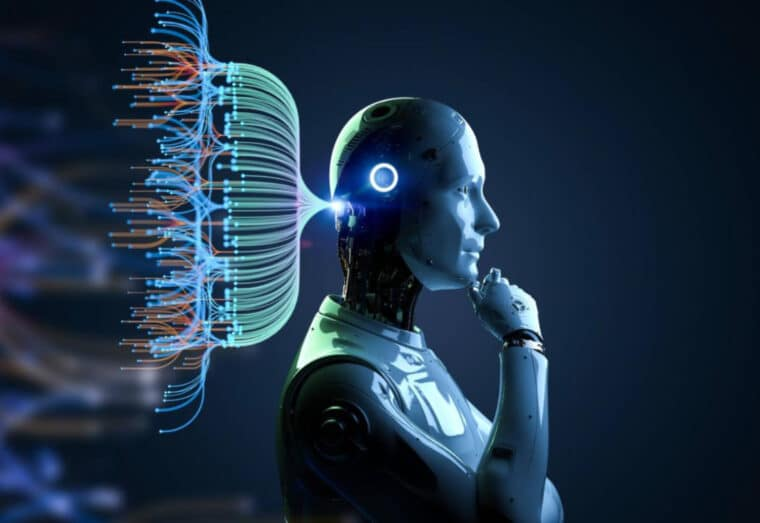
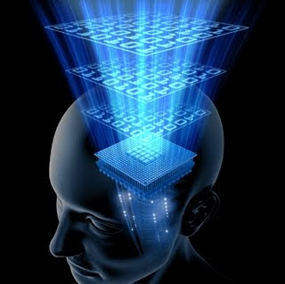
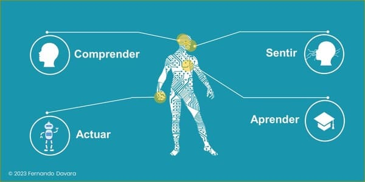
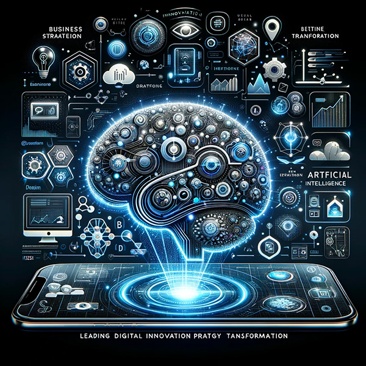
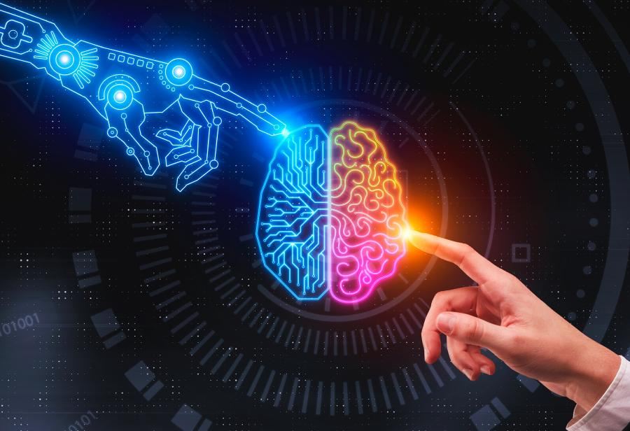

Unidad 2: Representación del Conocimiento, Razonamiento y los Aspectos Metodológicos en Inteligencia Artificial

La inteligencia artificial (IA) ha demostrado su capacidad para transformar el mundo de los negocios, la vida cotidiana y la sociedad en diversas áreas, como diagnósticos médicos, conducción automática, traducción de textos, personalización de productos y servicios, optimización de la cadena de suministro, gestión de desastres humanitarios y abordaje del cambio climático, entre otros.

Representación del Conocimiento
Una representación se puede definir como un conjunto de convenciones sobre cómo describir algo, y tiene cuatro elementos clave:
- Léxico: Conjunto de símbolos utilizados para representar información.
- Estructura: Organización de los símbolos y su relación.
- Operadores: Reglas que definen cómo se manipulan los símbolos.
- Semántica: Significado asociado a las representaciones.
Entre las representaciones más utilizadas en IA se encuentran las redes semánticas, que incluyen varios tipos, como:
- Redes de definición: Para representar conceptos y sus relaciones.
- Redes asertivas: Para hacer afirmaciones sobre el conocimiento.
- Redes de implicación: Para representar inferencias.
- Redes ejecutables: Que permiten la ejecución de acciones.
- Redes de aprendizaje: Que facilitan la adquisición de nuevo conocimiento.
- Redes híbridas: Combinaciones de las anteriores.

2.1 Principios y Metodología de la Inteligencia Artificial
Principios
La IA se formalizó en 1956 y ha atraído el interés de científicos de diversas disciplinas. El estudio de la inteligencia es uno de los más antiguos, y la IA representa un avance significativo en la comprensión de la información y el conocimiento, así como su adquisición, almacenamiento, uso y transmisión.
Los principios fundamentales de la IA incluyen:
- Autoaprendizaje: La IA busca aprender constantemente para ofrecer soluciones rápidas y eficientes a problemas.
- Interacción con el usuario: La IA debe interactuar de manera efectiva con los usuarios, comprendiendo comandos.
- Reacción en tiempo real: La IA debe ser capaz de trabajar en tiempo real, proporcionando respuestas rápidas.
- Autonomía: La IA debe ser capaz de ejecutar tareas de manera independiente.
Metodologías
- Lógica difusa: Permite manejar la incertidumbre mediante valores de verdad entre 0 y 1.
- Redes neuronales: Potentes para tareas como clasificación y reconocimiento de patrones.
- Algoritmos genéticos: Inspirados en la teoría de la evolución, se utilizan para optimización y resolución de problemas.

2.2 Paradigmas de la Inteligencia Artificial
Paradigmas Principales
Existen varios paradigmas que definen la representación del conocimiento y su uso en IA:
- Paradigma simbólico: Se enfoca en la programación del razonamiento simbólico.
- Paradigma conexionista: Inspirado en el funcionamiento del cerebro, utiliza redes neuronales.
- Paradigma situado o reactivo: Se basa en el comportamiento, eliminando la planificación.
- Paradigma híbrido: Combina varios subsistemas inteligentes.
- Paradigma distribuido: Enfocado en la resolución de problemas mediante múltiples agentes autónomos.
- Paradigma de redes neuronales: Busca imitar el comportamiento humano mediante redes de neuronas artificiales.
- Sistemas expertos: Se centran en emular la actividad de expertos humanos en áreas específicas.

Conclusión
La IA sigue evolucionando con múltiples metodologías y paradigmas, transformando industrias y mejorando la vida cotidiana. Comprender cómo se representa el conocimiento y los paradigmas de IA permite desarrollar tecnologías más avanzadas para el futuro.
